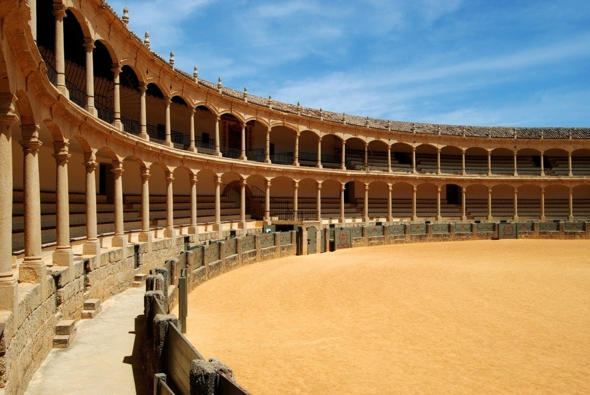
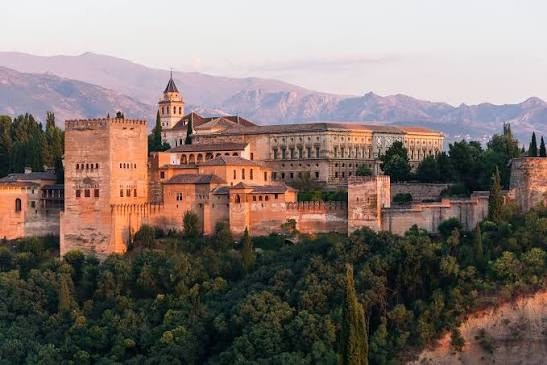

5 Excursiones de Día Completo desde Torremolinos 2026
Acantilados verticales, pueblos blancos, patrimonio UNESCO y costa de lujo. Elige tu excursión perfecta según lo que buscas.
27 jun 20268 min de lecturaExcursiones · Málaga
Caminito del Rey — pasarelas a más de 100 metros sobre el desfiladero de los Gaitanes · Málaga
Torremolinos es el punto de partida perfecto para 5 excursiones de día completo muy distintas entre sí. Cada una tiene su propia personalidad: acantilados verticales, pueblos blancos, patrimonio UNESCO o costa de lujo. Esta guía te dice exactamente qué esperar en cada una y para quién es ideal.
Excursión 01
Caminito del Rey
Ideal para: aventura sin ser extremaSenderismo3–4 h caminando
Un sendero de 7,5 kilómetros entre Ardales y Álora con 3 kilómetros de pasarelas ancladas a paredes verticales a más de 100 metros de altura, atravesando el desfiladero de los Gaitanes. Es la excursión más buscada de la región y la más emocionante si te gusta la aventura sin ser extrema.
La excursión completa desde Torremolinos es de unas 8 horas. Vas acompañado de guía especializado y la entrada está incluida. Menores de 8 años no pueden entrar por seguridad. Lleva calzado de senderismo. Vuelves a tiempo para la tarde en la playa.
Senderismo3–4 horas
Excursión total~8 horas
Edad mínima8 años
CancelaciónHasta 24 h antes
Caminito del Rey — pasarelas a más de 100 metros de altura sobre el desfiladero de los Gaitanes
Excursión 02
Nerja, Cuevas y Frigiliana
Ideal para: pueblos blancos e historiaCuevasBalcón de Europa
Una ruta de 7,5 horas que combina las Cuevas de Nerja (con estalactitas milenarias y vestigios prehistóricos), el pueblo blanco de Frigiliana y el Balcón de Europa, uno de los miradores más espectaculares sobre el Mediterráneo. La entrada a las cuevas y un vino en Frigiliana están incluidos.
Frigiliana es el pueblo blanco más fotogénico de la zona: calles empedradas, macetas en cada balcón y miel de caña local. El Balcón de Europa te deja sin palabras. Muchos se quedan a comer allí arriba.
Duración7,5 horas
IncluyeEntrada + vino
Mínimo4 personas
GuíaES / EN
Cuevas de Nerja — formaciones geológicas milenarias con vestigios de presencia prehistórica
Excursión 03
Mijas y Marbella
Ideal para: familias y relaxCosta oestePuerto Banús
La excursión más relajada: 9 horas con parada en Mijas (pueblo blanco interior con vistas a la costa), Marbella (paseo marítimo moderno, playas de lujo) y a menudo Puerto Banús, el puerto deportivo más chic de la Costa del Sol. Es más para mirar que para comprar, pero impresiona.
La opción perfecta si viajas con familia o no quieres demasiado senderismo. Dos ambientes completamente distintos en un mismo día.
Duración9 horas
DificultadBaja
NiñosCualquier edad
AmbienteCosta y lujo
Mijas — uno de los pueblos blancos más fotogénicos de la Costa del Sol
Excursión 04
Ronda y Setenil de las Bodegas
Ideal para: historia y fotografíaPuente NuevoInterior montañoso
Ronda está dividida por el famoso Puente Nuevo: 120 metros de altura sobre un precipicio, construido en 1793 y símbolo de Andalucía. Durante la visita se recorre la Puerta de Almocábar, la Iglesia de Santa María la Mayor y la Maestranza, la plaza de toros más antigua de España.
Muchas excursiones incluyen Setenil de las Bodegas, un pueblo blanco donde las casas están literalmente construidas bajo rocas. Tan peculiar como suena. La excursión dura 10–11 horas, la más larga del interior.
Duración10–11 horas
DificultadMedia
EstiloHistoria / arq.
Distancia~100 km

La Maestranza de Ronda — la plaza de toros más antigua de España, del siglo XVIII
Excursión 05
Granada y la Alhambra
Ideal para: patrimonio UNESCOLa más épica12–13 horas
La Alhambra es un complejo palaciego construido en el siglo XIV por la dinastía nazarí: el mejor ejemplo de arquitectura islámica medieval en Europa. Patios interiores, fuentes, azulejos con caligrafía árabe y jardines reales (Generalife). Cada rincón es diferente. Está en la lista de los monumentos más visitados de España por algo.
La excursión dura 12–13 horas porque Granada está a 100 kilómetros. Si te sobra tiempo, el Albaicín, la Catedral y los bares de tapas completan el día. Solo para quienes tengan buena energía.
Duración12–13 horas
Distancia100 km
UNESCOSí
DificultadResistencia

La Alhambra de Granada — patrimonio UNESCO y el mejor ejemplo de arquitectura islámica medieval en Europa
Cómo elegir tu excursión desde Torremolinos
No hay una excursión mejor. Hay una excursión perfecta para cada persona. Los tours salen por la mañana (7–8 h) y vuelven por la tarde-noche. Los precios rondan los 40–80 € por persona con transporte y entrada incluidos.
→¿Poco tiempo pero quieres impacto?Caminito del Rey — solo 3–4 h caminando, vuelves a la playa por la tarde.
→¿Quieres pueblos blancos bonitos?Nerja y Frigiliana o Ronda. Según si prefieres costa o montaña.
→¿Familia con niños de cualquier edad?Mijas y Marbella — sin demasiado senderismo, fácil y variado.
→¿Te interesa la historia y la arquitectura?Ronda o Granada. Según el tiempo que tengas.
→¿Quieres lo más épico, lo que no olvidarás?Granada y la Alhambra. Blinda el día y lleva energía.
Plaza Paraíso Torremolinos 2026 — del 25 de julio al 13 de septiembre en la Plaza de Toros
Y de vuelta en Torremolinos, la plaza
Vuelves con historias. Y si el día lo permite, Torremolinos tiene más. Del 25 de julio al 13 de septiembre, la Plaza de Toros abre como Plaza Paraíso: música en directo, teatro, gastronomía y ocio al aire libre. El mejor cierre para un día de excursión.
Preguntas frecuentes sobre excursiones desde Torremolinos
¿Cuál es la mejor excursión para principiantes?
Mijas y Marbella es la más relajada: dos pueblos, vistas costeras y poco senderismo. Si prefieres aventura fácil, Caminito del Rey es corto (3–4 h) e impactante. Para historia sin agotarte, Nerja es perfecta.
¿Cuánto dura la excursión al Caminito del Rey?
El senderismo son 3–4 horas. La excursión completa desde Torremolinos, con transporte, es de unas 8 horas. Salida 7–8 h, vuelta hacia las 15–16 h.
¿Se puede ir de excursión con niños pequeños?
Sí, pero depende de la edad. Caminito del Rey no admite menores de 8 años. Mijas y Marbella funciona con niños de cualquier edad. Nerja también, aunque las cuevas son fresquitas. Granada (12–13 h) es muy larga para peques. Ronda tiene mucho walking.
¿Qué incluye el precio del tour?
Generalmente transporte en autobús con aire acondicionado, entrada a monumentos y guía en español o inglés. A veces incluye un pequeño refrigerio. Comida no suele estar incluida: lleva dinero para comer.
¿Cuál es la excursión más lejana desde Torremolinos?
Granada y la Alhambra, a 100 kilómetros. La excursión dura 12–13 horas en total. Es la más intensa y la más lejana, pero también la más memorable si te interesa la arquitectura islámica.
El mejor cierre del día
Excursión de día, Plaza Paraíso de tarde
Del 25 de julio al 13 de septiembre, la Plaza de Toros de Torremolinos es el punto de encuentro del verano. Música, teatro, gastronomía y ocio al aire libre para terminar el día como se merece.